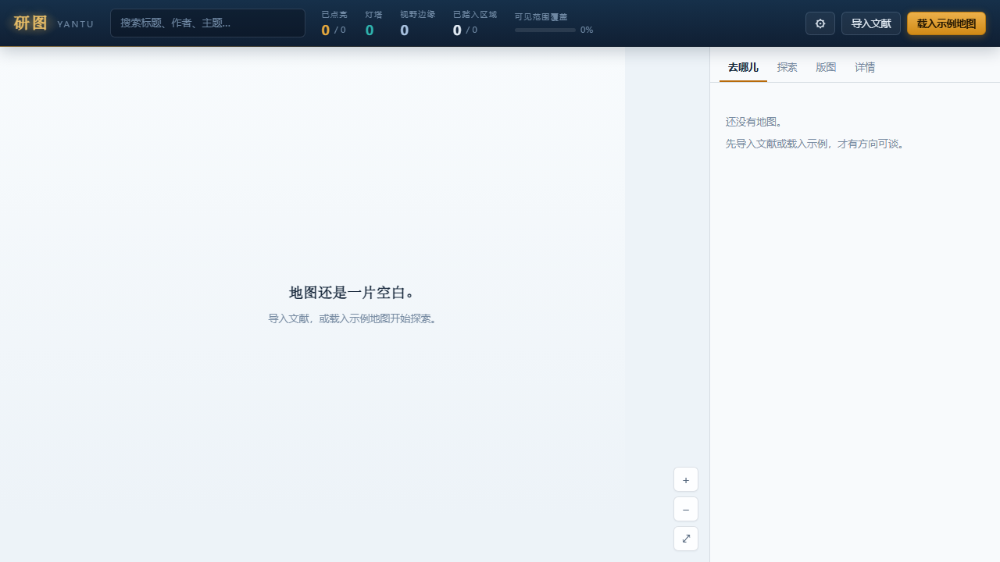
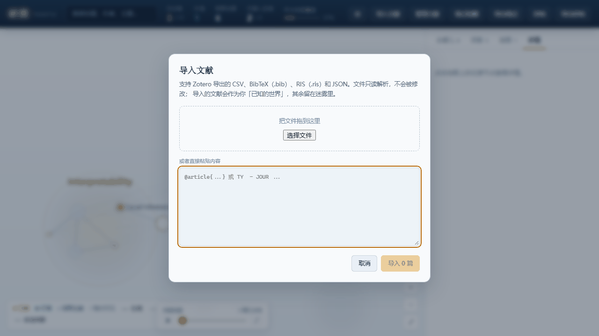

1
首次启动：载入示例地图
打开应用后，点击右上角「载入示例地图」。示例自带五个方向的真实论文数据，其中 3 篇已读、1 篇有笔记（灯塔）。第一帧就能看到完整的视觉词汇——发光、灯塔、前沿、迷雾。

使用指南
以下是用研图 Yantu 探索一个研究领域的典型流程。每一步都有真实界面截图。
打开应用后，点击右上角「载入示例地图」。示例自带五个方向的真实论文数据，其中 3 篇已读、1 篇有笔记（灯塔）。第一帧就能看到完整的视觉词汇——发光、灯塔、前沿、迷雾。

地图中央是已读论文（暖色发光），灯塔（冷色呼吸光晕）照得更远。空心圈是可达但未读的前沿文献。HUD 显示：已点亮 3/11、灯塔 1、视野边缘 6、可见范围覆盖 27%。

打开右侧「去哪儿」面板。线索按陌生度排序——越靠前越可能带你离开熟悉区域。每条线索带理由：「连接『表征学习』与『未分类』」「邻接 3 篇你已读过的论文」。

在地图上点击前沿节点，打开「详情」面板。点击「标记已读」——该论文变为暖色发光，邻接文献从迷雾边缘浮现。这是核心循环的关键动作。

在详情面板写下你的想法。笔记是唯一的视野增益——`read → beacon` 必须写笔记。灯塔比普通已读多照亮一跳，注解是你真的思考过的证据。

切换到「版图」面板。看到哪些区域已踏入、哪些从未涉足。空白区域有名字——「因果推断你从未踏入过」比一片无名空白更有叙事力。

「探索」面板的任务由当前地图实时推导——比如「踏入一个新区域」或「连接两个已知区域」。完成任务的唯一奖励：更大的地图。

准备好后，点击「导入文献」上传 Zotero / BibTeX / RIS 导出文件。导入前预览识别结果；导入的文献全部可见（至少是前沿），迷雾只用于线上未知文献。

npm install
npm run dev:web # 浏览器打开 localhost:5173
npm run dev # Tauri 桌面端首次启动点「载入示例地图」，或导入自己的 Zotero 文库。